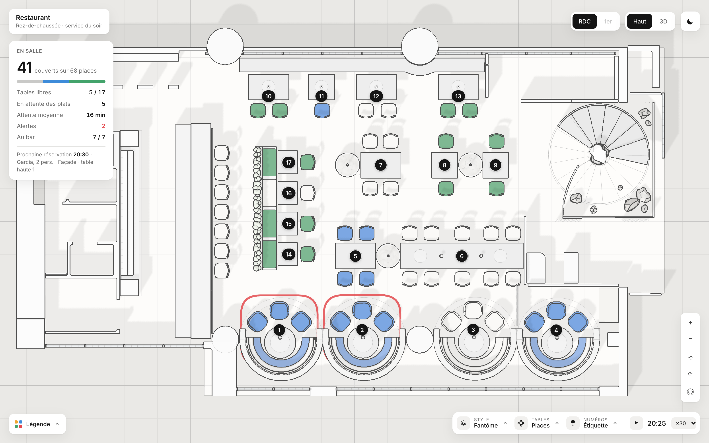
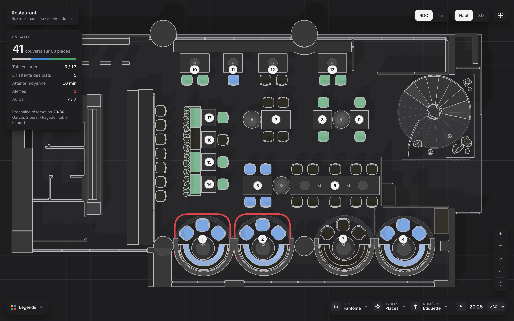
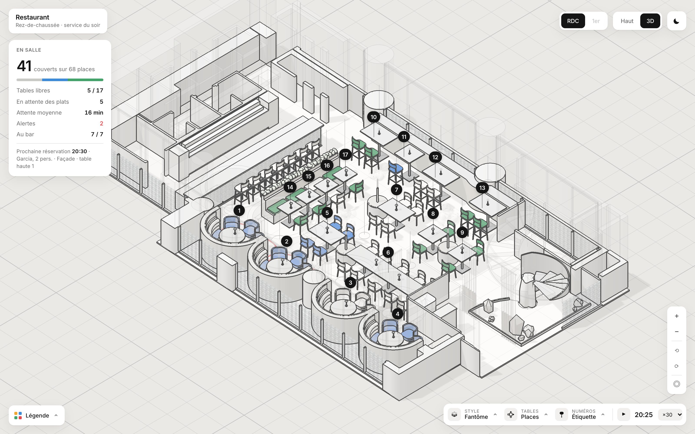
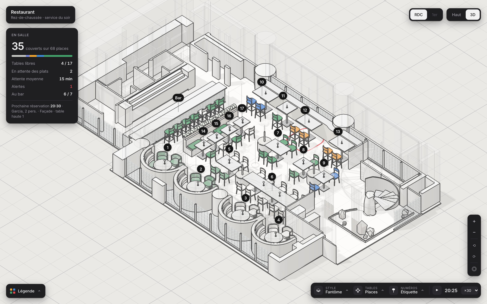

Restaurant · floor1 · étape 7 : la carte telle que choisie, en clair et en sombre
24/11/2026 · la banquette jardinière, la barre de commande en clair, la légende repliable, le thème sombre
Tes trois choix sont appliqués. La banquette jardinière remplace les mange-debout, avec ses
quatre tables (14 à 17). Les réglages sont dans la barre de commande, en bas à droite, en clair. La légende se replie
derrière son bouton en bas à gauche : elle s'ouvre vers le haut, comme les menus. Le bouton en haut à droite passe
l'interface en sombre, et la carte avec elle : les murs passent en anthracite et les traits en clair. Le choix est
gardé d'une visite à l'autre. Les autres dessins sont retirés de la carte.

La banquette jardinière, maintenant dans le modèle
Une vidéo montre la carte en main, jusqu'au passage en sombre :
rendus/9-carte-finale/manipulation.mp4.La vue du haut

Clair

Sombre
La vue 3D

Clair

Sombre